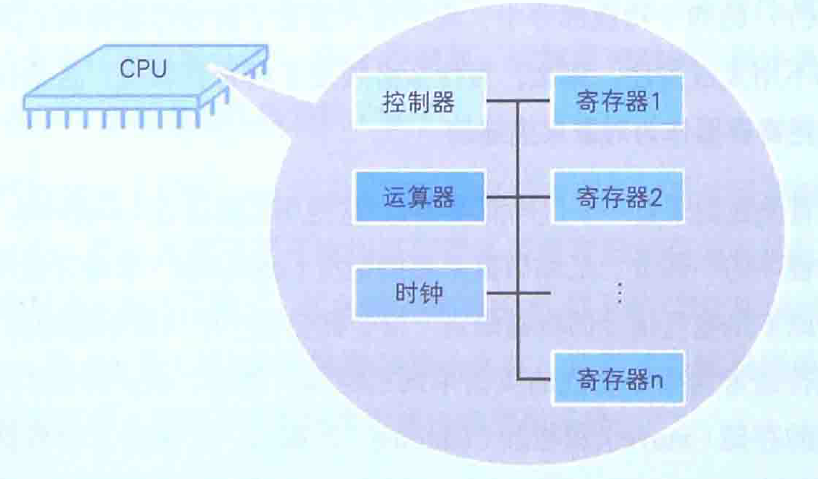
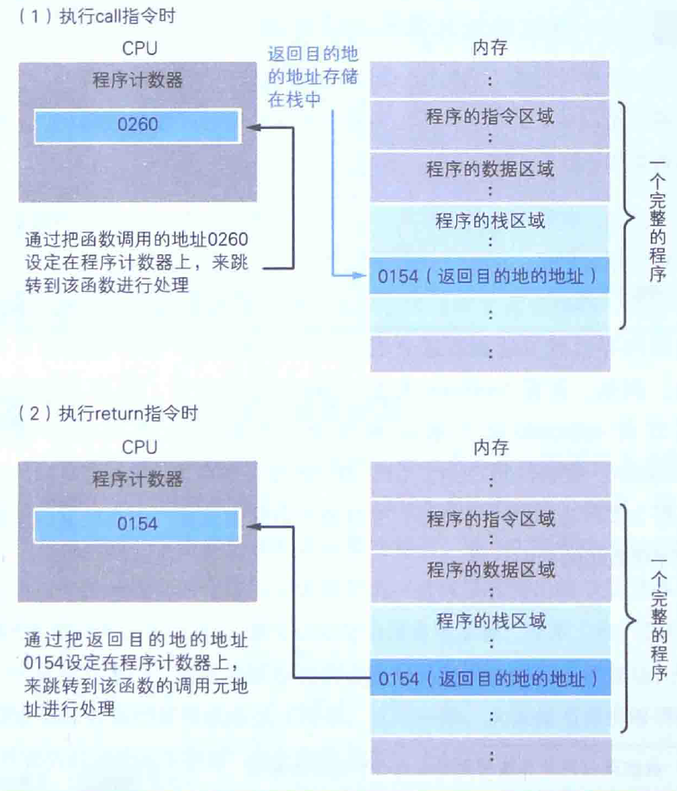

程序员需要了解的计组知识(2): CPU
1. 介绍
CPU 从功能上由控制器、运算器、寄存器和时钟四个部分组成，CPU 需要与内存、IO 设备配合工作。程序启动后，根据时钟信号，CPU 会从内存中不断读取指令和数据进行运算，控制器再根据运算结果进行控制。

这些指令就是最底层的机器语言，由 0 和 1 组成，程序员无法直接阅读，故引入汇编语言。汇编语言是 “给程序员看的机器码”，汇编语言与机器码一一对应，通常将汇编语言转换为机器码的过程称为汇编，将机器码转换为汇编语言称为反汇编。
对于程序员而言，我们只需要关注其中的寄存器，CPU 是寄存器的集合。
2. 程序控制
2.1 逻辑跳转
CPU 执行指令，是一条条按顺序执行的，并且有一个 PC 寄存器用来存储下一条要执行指令的地址，上文说到的 CPU 从内存中读取指令，便是根据 PC 寄存器中存放的地址，从内存中加载指令执行。
汇编语言中包含 jmp、jne、goto 等指令，会直接或者根据条件间接改变 PC 寄存器的值，达到跳转代码的效果。平常代码中的 if else、for/while 循环等会被编译成 jmp 等指令，实现逻辑控制的效果。
2.2 函数调用
函数调用也是通过设置 PC 寄存器为函数的地址实现的，不过与逻辑跳转不一样的地方在于，函数调用不是使用 jmp 等指令，而是采用 call 和 return 两个指令。
call 指令会将函数执行后的下一条指令地址存放在栈中，而 return 指令会将栈顶的指令地址给 PC 寄存器赋值。


3. 堆和栈
寄存器只能存放很少量的数据，大多数时候，CPU 要指挥寄存器跟内存交换数据。所以，除了寄存器，还必须了解内存怎么储存数据。
程序运行时，OS 会预先分配一段内存，用于存储数据。
对于动态的内存占用（例如 C 语言中的 malloc），会从预先分配的内存中划分出一部分，这种用户主动请求而划分的内存，称之为堆，堆的一个特点是不会自动释放，依赖用户或者垃圾收集器进行回收。
函数调用需要在内存中创建一个帧，用于存储函数的内部变量，例如
1 | int test(int x) { |
在调用 test 函数前，需要将 x 先存放在内存之中，而函数执行过程中变量 a 和 b 也需要存储在帧中。在函数调用结束之后，帧的内存会被自动回收，而这块内存称之为栈。
说明：
- 数据结构中的堆是用数组实现的二叉树，其父节点的值比所有子节点的大/小。本节讨论的堆主要针对内存而言，两者没有实质联系
- 在日常交流或者其他技术文章中会存在 堆栈 这个概念，而 堆栈 = 栈
4. 一些科普
- 乱序执行：为了提高运行效率，CPU 不严格按照指令出现的顺序执行，例如下面的计算，d 依赖 a 的结果，必须在 a = b + c 允许之后计算，但 x 与 a、d 没有关系，x 的计算可能在 a、d 计算之前，也可能在 a、d 计算之后。
1 | a = b + c |
- 指令集架构：分为复杂指令集 CISC 和精简指令集 RISC。RISC 指令固定长度，代表是 ARM；CISC 指令不固定长度，代表是 Intel
- x86 架构：狭义的 x86 架构指只支持 32 位的 Intel/AMD 的 CPU；x86_64 架构又称 x64 架构，支持 32 位和 64 位，指令集与 x86 兼容，目前绝大部分的 Intel/AMD CPU 属于这个体系；广义的 x86 架构，泛指 x86 + x64。程序员谈论的 x86 一般指广义上的，即 Intel/AMD 的 CPU。
- 超线程：Intel 的技术商标，更广泛的概念叫 同步多线程 Simultaneous Multithreading。不同于软件级别的多线程，超线程将一个物理 CPU 分成两个逻辑部分 ，例如在 CPU 有两份相同的寄存器，每份寄存器存储一个任务的运行环境，在一个任务无法进行时可以极快切换到另一个任务运行。我们平时看到的 8 核 16 线程即属于超线程的范畴。